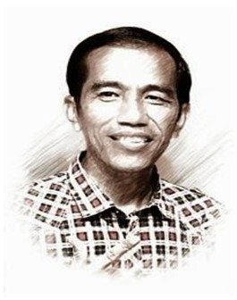
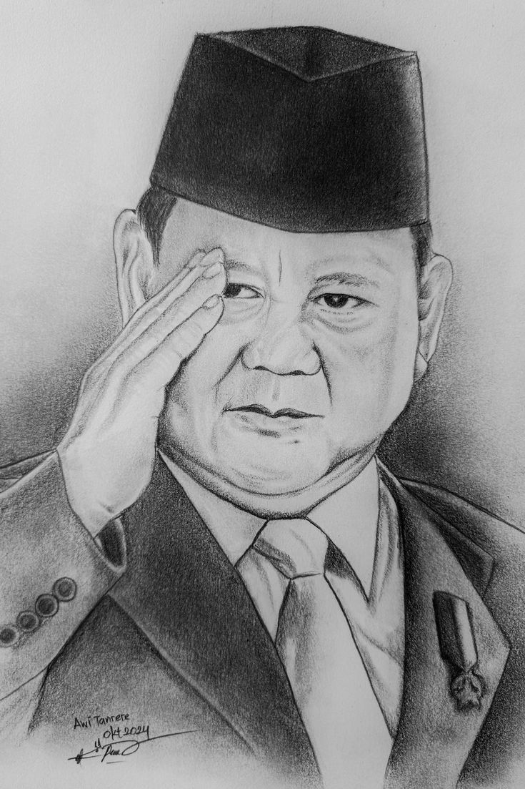

Joko Widodo, yang sering dikenal dengan nama Jokowi, adalah seorang politikus dan pengusaha Indonesia yang menjabat sebagai presiden ketujuh Indonesia dari tahun 2014 hingga 2024. Sebelumnya anggota Partai Demokrasi Indonesia Perjuangan, ia adalah presiden pertama negara itu yang bukan berasal dari kalangan elit politik atau militer.

Prabowo Subianto Djojohadikusumo adalah seorang politikus, pengusaha, dan pensiunan perwira militer Indonesia yang menjabat sebagai presiden kedelapan Indonesia sejak tahun 2024. Sebelumnya, ia menjabat sebagai menteri pertahanan ke-26 di bawah Presiden Joko Widodo dari tahun 2019 hingga 2024.